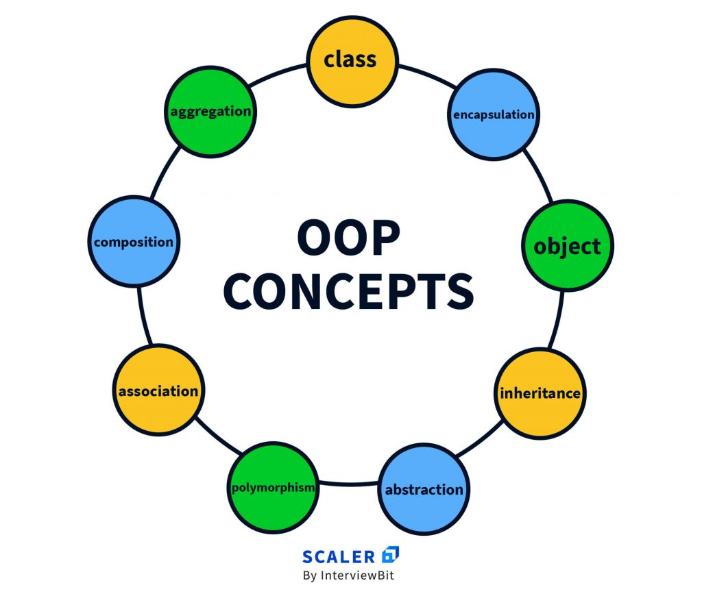
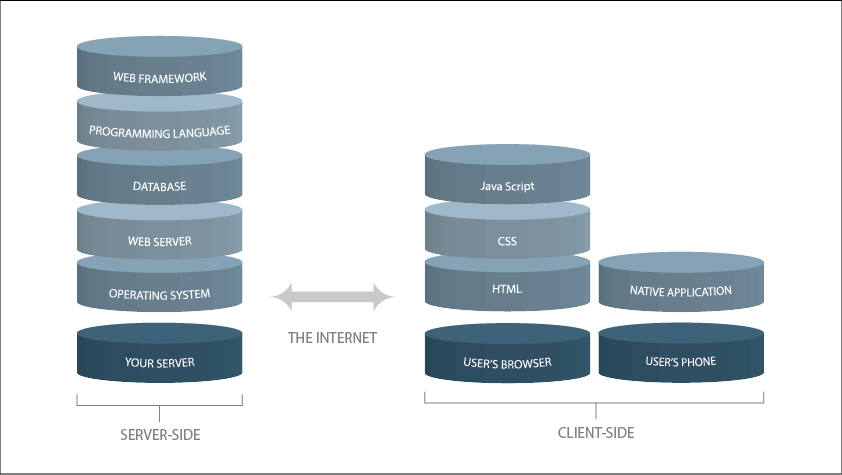
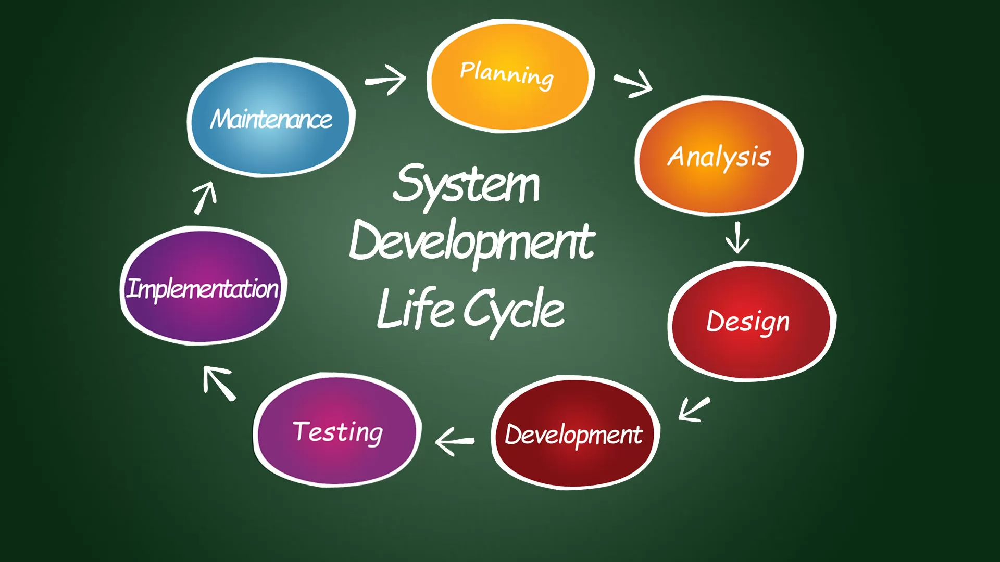
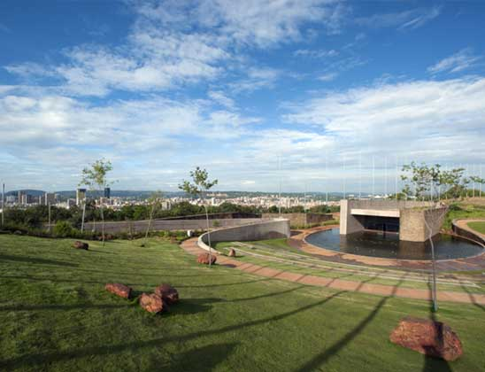
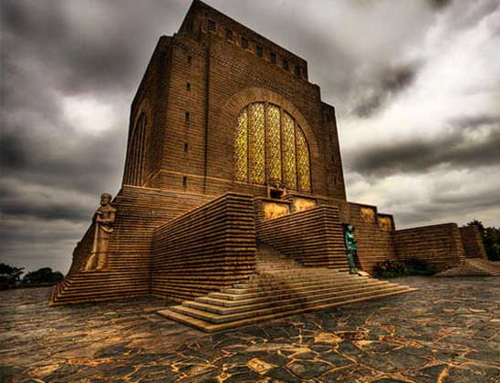

The huge, sprawling, and tortuously shaped city of Los Angeles occupies a sizable portion of the southern part of the county. It too has a varied topography, climbing from sea level at the beach community of Venice to Mount Lukens
I'd like to learn Japanese.
It's a language with a rich cultural heritage, and it opens up opportunities for me to engage with Japanese literature, films, and pop culture.
English
Japanese
Hello
Konnichiwa
How are you?
O-genki desu ka?
?peace n love
heiwa n ai
Favourite subjects

OOP
Object-oriented programming (OOP) is a computer programming model that organizes software design around data, or objects, rather than functions and logic. An object can be defined as a data field that has unique attributes and behavior.

Database
A database is an organized collection of structured information, or data, typically stored electronically in a computer system. A database is usually controlled by a database management system (DBMS).

System development
The Software Development Life Cycle has cemented itself as the de-facto process to help build information systems, systems engineering, and software engineering from the ground up by encompassing key phases that can be grouped in planning, implementation, and maintenance.
Historic Places

freedom-park
A hilltop memorial to South African freedom fighters and a museum tracing the nation's history.
Union Building
The Union Buildings is the official seat of the South African government and houses the Office of the President of the Republic of South Africa.

Voortrekker Monument
Designed by architect Gerard Moerdijk and inugurated in 1949, the Voortrekker Monument is the most visited heritage site of its kind in Gauteng